РАСПРЕДВАЛ (для моделей с DPF) > УСТАНОВКА |
| 1. УСТАНОВИТЕ РАСПРЕДВАЛ |
 |
С помощью установочного болта шкива коленчатого вала установите поршень цилиндра № 1 под углом 90° до ВМТ такта сжатия.
| *1 | Шпонка |
 |
Установите распредвал.
Нанесите на торцевую поверхность распредвала моторное масло.
Установите распредвал в головку блока цилиндров таким образом, чтобы шпоночная канавка была направлена вверх.
| *1 | Шпоночная канавка |
| *a | Вверх |
| 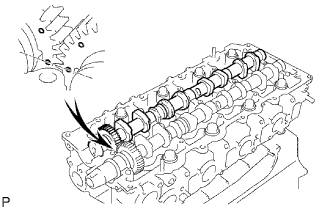 |
Совместите установочные метки (в виде 1 точки) на ведущей и ведомой шестернях распредвала и установите распредвал № 2.
Удалите весь старый герметик (FIPG) с крышки подшипника распредвала.
 |
Нанесите герметик на заданные участки, показанные на рисунке.
| *1 | Герметик |
| *2 | Канал для масла |
 |
Установите на место 5 крышек подшипников.
 |
Нанесите тонкий слой моторного масла на резьбу и под головки болтов крышек подшипников.
Установите и равномерно затяните в несколько этапов 15 болтов крышек подшипников в последовательности, показанной на рисунке.
 |
Установите новый сальник распредвала.
Нанесите универсальную консистентную смазку на кромку нового сальника.
С помощью SST и молотка запрессуйте сальник так, чтобы его поверхность была заподлицо с поверхностями крышки подшипника распредвала и головки блока цилиндров.
| 2. УСТАНОВИТЕ КРЫШКУ РЕМНЯ ГАЗОРАСПРЕДЕЛЕНИЯ № 2 |
 |
Нанесите герметик (FIPG) на заданные участки, показанные на рисунке.
| *1 | Герметик |
Установите крышку ремня газораспределения № 2 и закрепите ее 4 болтами и гайкой.
| 3. УСТАНОВИТЕ ЗУБЧАТОЕ КОЛЕСО РАСПРЕДВАЛА |
Установите зубчатое колесо распредвала.
Вверните болт зубчатого колеса распредвала, удерживая распредвал ключом.
| 4. УСТАНОВИТЕ ОПОРНЫЙ РОЛИК ПРИВОДНОГО РЕМНЯ ГАЗОРАСПРЕДЕЛЕНИЯ № 1 В СБОРЕ |
С помощью шестигранного гаечного ключа на 10 мм закрепите новую шайбу и опорный ролик приводного ремня газораспределения № 1 болтом.
Проверьте, плавно ли двигается опорный шкив.
Если опорный ролик не перемещается плавно, проверьте установку опорного ролика и шайбы.
| 5. УСТАНОВИТЕ ПРИВОДНОЙ РЕМЕНЬ ГАЗОРАСПРЕДЕЛЕНИЯ |
 |
Удостоверьтесь, что установочные метки совмещены, как показано на рисунке.
| *1 | Установочная метка |
Установите приводной ремень газораспределения на шкив приводного вала насоса, зубчатое колесо распредвала и опорный ролик приводного ремня газораспределения № 1, придерживаясь этой последовательности.
| 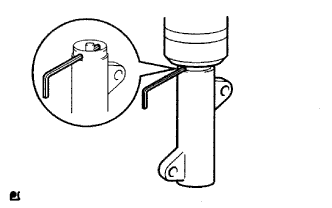 |
Установите натяжитель вертикально. Затем установите пресс сверху натяжителя.
С помощью пресса медленно запрессуйте толкатель, поддерживая усилие 981-9807 Н (100-1000 кгс, 220-2205 фунт-сила-дюймов).
Совместите отверстия в толкателе и кожухе. Затем вставьте через отверстия шестигранный ключ на 1,5 мм, чтобы закрепить толкатель на месте.
Временно закрепите натяжитель приводного ремня 2 болтами, прижимая опорный ролик к приводному ремню газораспределения.
Затяните 2 болта.
 |
Выньте из натяжителя торцевой гаечный ключ на 1,5 мм.
 |
Поверните коленчатый вал по часовой стрелке на 720° и убедитесь, что установочные метки совмещены, как показано на рисунке.
| *1 | Установочная метка |
| 6. ПРОВЕРЬТЕ ЗАЗОР В ПРИВОДЕ КЛАПАНОВ |
 |
Проверьте только указанные клапаны.
Щупом измерьте зазоры между толкателями клапанов и распредвалом.
| Параметр / Устройство | Заданные условия |
| На впуске | 0,2 - 0,3 мм (0,00787 - 0,0118 дюйма) |
| На выпуске | 0,35 - 0,45 мм (0,0138 - 0,0177 дюйма) |
| *1 | На выпуске |
| *2 | На впуске |
| *a | Передняя сторона |
Проверните коленчатый вал на 360° и установите поршень цилиндра № 4 в ВМТ такта сжатия.
| 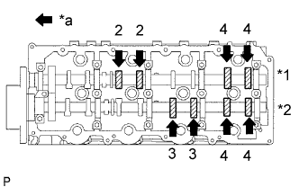 |
Проверьте только указанные клапаны.
Щупом измерьте зазоры между толкателями клапанов и распредвалом.
| Параметр / Устройство | Заданные условия |
| На впуске | 0,2 - 0,3 мм (0,00787 - 0,0118 дюйма) |
| На выпуске | 0,35 - 0,45 мм (0,0138 - 0,0177 дюйма) |
| *1 | На выпуске |
| *2 | На впуске |
| *a | Передняя сторона |
| 7. ОТРЕГУЛИРУЙТЕ ЗАЗОР В ПРИВОДЕ КЛАПАНОВ |
для моделей с DPF:
Снимите распредвалы (Нажмите здесь).
для моделей без DPF:
Снимите распредвалы (Нажмите здесь).
Извлеките толкатели клапанов.
| 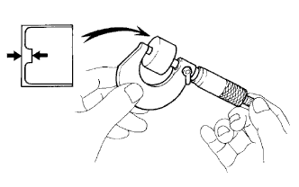 |
Микрометром измерьте толщину снятого толкателя клапана.
Вычислите толщину нового толкателя, при которой зазор в приводе клапана будет удовлетворять требованиям.
| А | B | C |
| Толщина нового толкателя | Толщина используемого толкателя | Измеренный зазор в приводе клапанов |
Выберите новый толкатель с ближайшей к рассчитанному значению толщиной.
Установите выбранный толкатель клапана.
| *1 | Таблица для подбора толкателей впускных клапанов | *2 | Толщина установленного толкателя, мм (дюйм) |
| *3 | Измеренный зазор, мм (дюйм.) | - | - |

| *1 | Таблица для подбора толкателей впускных клапанов | *2 | Толщина установленного толкателя, мм (дюйм) |
| *3 | Измеренный зазор, мм (дюйм.) | - | - |
| Номер толкателя | Заданные условия | Номер толкателя | Заданные условия | Номер толкателя | Заданные условия |
| 06 | 5,06 мм (0,1992 дюйма) | 30 | 5,30 мм (0,2087 дюйма) | 54 | 5,54 мм (0,2181 дюйма) |
| 08 | 5,08 мм (0,2000 дюйма) | 32 | 5,32 мм (0,2094 дюйма) | 56 | 5,56 мм (0,2189 дюйма) |
| 10 | 5,10 мм (0,2008 дюйма) | 34 | 5,34 мм (0,2102 дюйма) | 58 | 5,58 мм (0,2197 дюйма) |
| 12 | 5,12 мм (0,2016 дюйма) | 36 | 5,36 мм (0,2110 дюйма) | 60 | 5,60 мм (0,2205 дюйма) |
| 14 | 5,14 мм (0,2024 дюйма) | 38 | 5,38 мм (0,2118 дюйма) | 62 | 5,62 мм (0,2213 дюйма) |
| 16 | 5,16 мм (0,2031 дюйма) | 40 | 5,40 мм (0,2126 дюйма) | 64 | 5,64 мм (0,2220 дюйма) |
| 18 | 5,18 мм (0,2039 дюйма) | 42 | 5,42 мм (0,2134 дюйма) | 66 | 5,66 мм (0,2228 дюйма) |
| 20 | 5,20 мм (0,2047 дюйма) | 44 | 5,44 мм (0,2142 дюйма) | 68 | 5,68 мм (0,2236 дюйма) |
| 22 | 5,22 мм (0,2055 дюйма) | 46 | 5,46 мм (0,2150 дюйма) | 70 | 5,70 мм (0,2244 дюйма) |
| 24 | 5,24 мм (0,2063 дюйма) | 48 | 5,48 мм (0,2157 дюйма) | 72 | 5,72 мм (0,2252 дюйма) |
| 26 | 5,26 мм (0,2071 дюйма) | 50 | 5,50 мм (0,2165 дюйма) | 74 | 5,74 мм (0,2260 дюйма) |
| 28 | 5,28 мм (0,2079 дюйма) | 52 | 5,52 мм (0,2173 дюйма) | - | - |

| *1 | Таблица для выбора толкателей выпускных клапанов | *2 | Толщина установленного толкателя, мм (дюйм) |
| *3 | Измеренный зазор, мм (дюйм.) | - | - |

| *1 | Таблица для выбора толкателей выпускных клапанов | *2 | Толщина установленного толкателя, мм (дюйм) |
| *3 | Измеренный зазор, мм (дюйм.) | - | - |
| Номер толкателя | Заданные условия | Номер толкателя | Заданные условия | Номер толкателя | Заданные условия |
| 06 | 5,06 мм (0,1992 дюйма) | 30 | 5,30 мм (0,2087 дюйма) | 54 | 5,54 мм (0,2181 дюйма) |
| 08 | 5,08 мм (0,2000 дюйма) | 32 | 5,32 мм (0,2094 дюйма) | 56 | 5,56 мм (0,2189 дюйма) |
| 10 | 5,10 мм (0,2008 дюйма) | 34 | 5,34 мм (0,2102 дюйма) | 58 | 5,58 мм (0,2197 дюйма) |
| 12 | 5,12 мм (0,2016 дюйма) | 36 | 5,36 мм (0,2110 дюйма) | 60 | 5,60 мм (0,2205 дюйма) |
| 14 | 5,14 мм (0,2024 дюйма) | 38 | 5,38 мм (0,2118 дюйма) | 62 | 5,62 мм (0,2213 дюйма) |
| 16 | 5,16 мм (0,2031 дюйма) | 40 | 5,40 мм (0,2126 дюйма) | 64 | 5,64 мм (0,2220 дюйма) |
| 18 | 5,18 мм (0,2039 дюйма) | 42 | 5,42 мм (0,2134 дюйма) | 66 | 5,66 мм (0,2228 дюйма) |
| 20 | 5,20 мм (0,2047 дюйма) | 44 | 5,44 мм (0,2142 дюйма) | 68 | 5,68 мм (0,2236 дюйма) |
| 22 | 5,22 мм (0,2055 дюйма) | 46 | 5,46 мм (0,2150 дюйма) | 70 | 5,70 мм (0,2244 дюйма) |
| 24 | 5,24 мм (0,2063 дюйма) | 48 | 5,48 мм (0,2157 дюйма) | 72 | 5,72 мм (0,2252 дюйма) |
| 26 | 5,26 мм (0,2071 дюйма) | 50 | 5,50 мм (0,2165 дюйма) | 74 | 5,74 мм (0,2260 дюйма) |
| 28 | 5,28 мм (0,2079 дюйма) | 52 | 5,52 мм (0,2173 дюйма) | - | - |
для моделей с DPF:
Установите распредвалы (Нажмите здесь).
для моделей без DPF:
Установите распредвалы (Нажмите здесь).
| 8. УСТАНОВИТЕ КРЫШКУ РЕМНЯ ГАЗОРАСПРЕДЕЛЕНИЯ № 1 |
Закрепите крышку ремня газораспределения с помощью 6 шайб и 6 болтов.
| 9. УСТАНОВИТЕ КОЖУХ ВЕНТИЛЯТОРА |
Установите шкив вентилятора на насос системы охлаждения.
Подсоедините перепускной шланг охлаждающей жидкости № 2 к впускному патрубку охлаждающей жидкости.
Временно закрепите 4 гайками кожух вместе с вентилятором с вискомуфтой на насосе системы охлаждения. Затяните гайки вручную до упора.
| 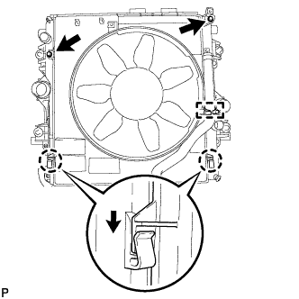 |
Присоедините захваты кожуха к радиатору, как показано на рисунке.
Установите кожух вентилятора на радиатор и закрепите 2 болтами.
Установите поликлиновой ремень вентилятора и генератора (Нажмите здесь).
Закрепите вентилятор с вискомуфтой на насосе системы охлаждения 4 гайками.
Присоедините перепускной шланг охлаждающей жидкости № 2 к зажиму на кожухе вентилятора.
Для моделей с автоматической трансмиссией:
| 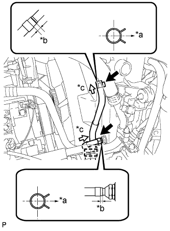 |
Подсоедините 2 патрубка масляного радиатора.
| *a | Правая сторона |
| *b | 2,0 - 7,0 мм |
| *c | Вид A |
Присоедините 2 шланга масляного радиатора к зажиму на кожухе вентилятора.
Подсоедините перепускной шланг охлаждающей жидкости № 2 к расширительному бачку радиатора.
Подсоедините перепускной шланг охлаждающей жидкости № 1 к кожуху вентилятора и закрепите его 2 зажимами.
Установите расширительный бачок радиатора и закрепите его 3 болтами.
| 10. УСТАНОВИТЕ ПАТРУБОК РАДИАТОРА № 1 |
| 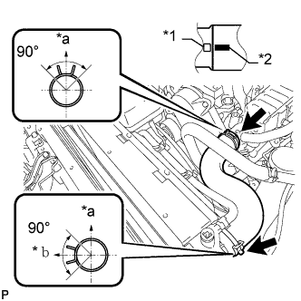 |
Установите патрубок радиатора и присоедините зажим.
| *1 | Выступы |
| *2 | Метка, нанесенная краской |
| *a | Верх |
| *b | Левая сторона |
| 11. УСТАНОВИТЕ ФОРСУНКУ В СБОРЕ |
| 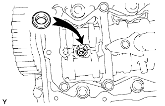 |
Установите 4 новых седла форсунок в головку блока цилиндров.
Нанесите тонкий слой чистого моторного масла на 4 новых кольцевых уплотнения.
 |
Установите по одному кольцевому уплотнению на каждую форсунку, как показано на рисунке.
| *1 | Новое кольцевое уплотнение |
Установите 4 форсунки в головку блока цилиндров.
При замене форсунки новой деталью зарегистрируйте компенсационный код форсунки (Нажмите здесь).
 |
Временно закрепите 4 новых шайбы и 4 фиксатора корпуса форсунок № 1 4 болтами.
| *1 | Шайба |
| *a | Вниз |
 |
| *1 | Фиксатор корпуса форсунки № 1 |
Временно закрепите 4 топливных трубки высокого давления гайками штуцеров.
 |
Проверьте трубопровод обратного слива топлива. Убедитесь, что на уплотнительных поверхностях 5 штуцеров нет царапин и вмятин.
Если присутствуют царапины или вмятины, замените трубопровод обратного слива топлива.
 |
Установите на место трубопровод обратного слива топлива и 5 новых прокладок.
Нанесите тонкий слой масла на 4 полых винта форсунок и пустотелый соединительный болт-штуцер.
Временно закрепите трубопровод обратного слива топлива с помощью 4 полых винтов форсунок и пустотелого соединительного болта-штуцера.
Затяние 4 болта фиксаторов корпуса форсунки.
 |
Затяните 4 полых винта форсунки в порядке с 1 по 4.
| *1 | Пустотелый соединительный болт-штуцер |
Затяните пустотелый соединительный болт-штуцер.
Снимите 4 топливные трубки высокого давления.
| 12. ПРОВЕРЬТЕ, НЕТ ЛИ УТЕЧЕК ТОПЛИВА |
| 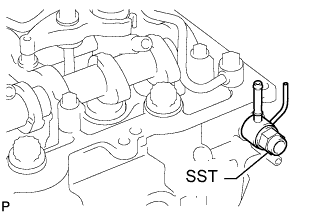 |
Убедитесь в отсутствии утечек из соединения трубопровода обратного слива топлива.
Установите новую прокладку и трубопровод обратного слива топлива № 2 на головку блока цилиндров с помощью SST (обратный клапан).
Нанесите немного мыльного раствора (или другой жидкости для обнаружения утечек топлива) на соединение трубопровода обратного слива топлива.
| 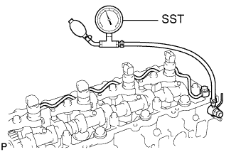 |
Установите SST (манометр для измерения давления наддува) со стороны возврата топлива трубопровода обратного слива топлива и поддерживайте давление 100 кПа (1,0 кгс/см2, 15 фунтов на кв. дюйм) в течение 60 с, чтобы проверить, появляются ли пузырьки.
После проверки герметичности топливной системы вытрите мыльный раствор с соединения трубопровода обратного слива топлива.
Снимите SST, трубопровод обратного слива топлива № 2 и прокладку.
| 13. УСТАНОВИТЕ КРЫШКУ ГОЛОВКИ БЛОКА ЦИЛИНДРОВ В СБОРЕ |
Удалите весь старый герметик (FIPG) с головки блока цилиндров.
 |
Нанесите герметик в местах, показанных на рисунке.
 | Герметик |
Установите новую прокладку крышки головки блока цилиндров.
| 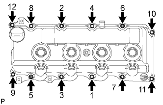 |
Временно закрепите крышку 10 болтами и 2 гайками в порядке, показанном на рисунке. Затем в 2 этапа затяните 10 болтов и 2 гайки в порядке, показанном на рисунке.
Установите 4 новых уплотнительных кольца форсунок в головке блока цилиндров.
| 14. УСТАНОВИТЕ ТРУБКУ ВЕНТИЛЯЦИИ КАРТЕРА |
Подсоедините 2 шланга вентиляции картера и закрепите трубку вентиляции картера болтом на крышке головки блока цилиндров.
| 15. УСТАНОВИТЕ КРЫШКУ ГОЛОВКИ БЛОКА ЦИЛИНДРОВ № 2 В СБОРЕ |
 |
Закрепите крышку головки блока цилиндров № 2 4 болтами.
| 16. УСТАНОВИТЕ ТРУБОПРОВОД ОБРАТНОГО СЛИВА ТОПЛИВА № 2 |
| 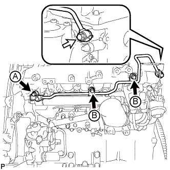 |
Временно закрепите трубопровод обратного слива топлива № 2 3 болтами.
 | Пустотелый соединительный болт-штуцер |
Временно установите новую прокладку и пустотелый соединительный болт-штуцер.
Затяните 3 болта и пустотелый соединительный болт-штуцер.
| 17. УСТАНОВИТЕ ТРУБОПРОВОД ОБРАТНОГО СЛИВА ТОПЛИВА № 3 |
 |
Нанесите на кольцевое уплотнение обратного топливного клапана тонкий слой топлива.
| *1 | Кольцевое уплотнение |
 |
Временно закрепите трубопровод обратного слива топлива № 3 2 болтами.
| *1 | Прокладка |
| Топливный обратный клапан |
Временно установите новую прокладку и обратный топливный клапан.
Затяните 2 болта и закрепите обратный топливный клапан.
Подсоедините 2 топливных шланга.
| 18. УСТАНОВИТЕ ТОПЛИВОПРОВОД № 2 |
| 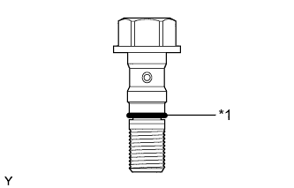 |
Нанесите на кольцевое уплотнение обратного топливного клапана тонкий слой топлива.
| *1 | Кольцевое уплотнение |
| 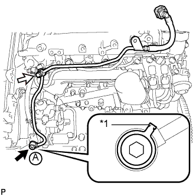 |
Временно закрепите топливопровод № 2 с новой прокладкой с помощью пустотелого соединительного болта-штуцера.
| *1 | Прокладка |
 | Пустотелый соединительный болт-штуцер |
| Топливный обратный клапан |
Временно установите новую прокладку и обратный топливный клапан.
С помощью шестигранного ключа на 6 мм затяните пустотелый соединительный болт-штуцер.
Затяните обратный топливный клапан.
| 19. УСТАНОВИТЕ ТОПЛИВНУЮ ТРУБКУ ВЫСОКОГО ДАВЛЕНИЯ № 4 |
Временно закрепите топливную трубку высокого давления № 4 гайками штуцеров.
Закрепите 2 зажима топливной трубки высокого давления № 2 болтом и гайкой.
С помощью разрезной головки на 17 мм затяните гайку штуцера топливной трубки высокого давления со стороны топливной системы Common Rail.
С помощью разрезной головки на 17 мм затяните гайки штуцеров топливной трубки высокого давления со стороны форсунки.
| 20. УСТАНОВИТЕ ТОПЛИВОПРОВОД № 1 |
Временно закрепите топливопровод № 1 с помощью 4 болтов.
Временно закрепите новую прокладку с помощью пустотелого соединительного болта-штуцера.
Затяните пустотелый соединительный болт-штуцер и 4 болта в порядке, показанном на рисунке.
Подсоедините топливопровод № 2 (Нажмите здесь).
| *1 | Топливопровод № 2 | - | - |
| Пустотелый соединительный болт-штуцер | - | - |
| 21. УСТАНОВИТЕ ПАТРУБОК ПОДАЧИ ВОЗДУХА |
Установите новую прокладку на впускной коллектор.
| *1 | Захват |
Закрепите патрубок подачи воздуха 3 болтами.
| 22. УСТАНОВИТЕ КРОНШТЕЙН ГАЗОВОГО ФИЛЬТРА |
Установите кронштейн газового фильтра и закрепите его болтом.
Введите в зацепление зажим и подсоедините жгут проводов.
| 23. УСТАНОВИТЕ ГАЗОВЫЙ ФИЛЬТР № 1 |
Установите газовый фильтр № 1 на кронштейн газового фильтра.
Подсоедините вакуумный шланг.
| 24. УСТАНОВИТЕ КРОНШТЕЙН КОРПУСА ДРОССЕЛЬНОЙ ЗАСЛОНКИ |
 |
Установите кронштейн корпуса дроссельной заслонки и предварительно закрепите его 3 болтами.
Затяните 3 болта кронштейна корпуса дроссельной заслонки в порядке, показанном на рисунке.
| 25. УСТАНОВИТЕ КРОНШТЕЙН КЛАПАНА СИСТЕМЫ СНИЖЕНИЯ ТОКСИЧНОСТИ ОТРАБОТАВШИХ ГАЗОВ |
Закрепите кронштейн клапана системы снижения токсичности отработавших газов болтом.
| 26. УСТАНОВИТЕ ДАТЧИК АБСОЛЮТНОГО ДАВЛЕНИЯ В КОЛЛЕКТОРЕ |
Установите датчик абсолютного давления в коллекторе и закрепите его болтом.
Подсоедините вакуумный шланг и разъем датчика абсолютного давления в коллекторе.
| 27. ПОДСОЕДИНИТЕ ЖГУТ ПРОВОДОВ |
Введите в зацепление 5 зажимов и подсоедините жгут проводов к верхней панели кожуха.
Для моделей с левосторонним рулевым управлением:
Подсоедините жгут проводов и закрепите соединение болтом.
Подсоедините жгут проводов и закрепите соединение болтом.
| 28. УСТАНОВИТЕ ЭЛЕКТРИЧЕСКИЙ КЛАПАН УПРАВЛЕНИЯ РОГ В СБОРЕ |
Установите новую прокладку и электрический клапан управления РОГ на патрубок подачи воздуха.
Подсоедините разъем электрического клапана управления РОГ.
| 29. ПРЕДВАРИТЕЛЬНО УСТАНОВИТЕ ОХЛАДИТЕЛЬ РОГ С КЛАПАНОМ РОГ № 2 В СБОРЕ |
Установите новую прокладку на шпильки патрубка подачи воздуха.
Установите новую прокладку на шпильки головки блока цилиндров.
Установите переходник клапана РОГ на электрический клапан управления РОГ и патрубок подачи воздуха с помощью 2 гаек и болта A.
Предварительно закрепите охладитель РОГ на впускном коллекторе с помощью 2 болтов, обозначенных символом B на рисунке.
Предварительно закрепите охладитель РОГ на головке блока цилиндров с помощью 2 гаек, обозначенных символом C на рисунке.

| *1 | Новая прокладка | *2 | Переходник клапана РОГ |
| *3 | Охладитель РОГ | *4 | Электрический клапан управления РОГ |
| *5 | Патрубок подачи воздуха | - | - |
| 30. ЗАКРЕПИТЕ ОХЛАДИТЕЛЬ РОГ С КЛАПАНОМ РОГ № 2 В СБОРЕ |
Затяните 2 болта, обозначенные А, как показано на рисунке.
Затяните 2 гайки, обозначенные символом B на рисунке.
Установите опору патрубка подачи воздуха и закрепите 3 болтами, обозначенными символом C на рисунке.
Затяните 2 гайки и болт, обозначенные символом D на рисунке.
Установите топливопровод № 1 на опору патрубка подачи воздуха и закрепите болтом E.

| *1 | Опора патрубка подачи воздуха | *2 | Топливопровод № 1 |
Подсоедините разъем датчика давления топлива к топливной системе Common Rail.
Подсоедините 4 разъема форсунок и закрепите 3 зажима жгута проводов.
| 31. УСТАНОВИТЕ КРОНШТЕЙН КРЫШКИ ДВИГАТЕЛЯ № 4 |
Установите кронштейн крышки двигателя № 4 и закрепите его болтом.
| 32. УСТАНОВИТЕ ИЗОЛЯТОР КРОНШТЕЙНА КРЫШКИ ДВИГАТЕЛЯ |
| 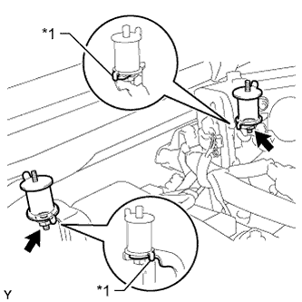 |
Установите 2 изолятора кронштейнов крышки двигателя и закрепите их 2 гайками.
| *1 | Захват |
| 33. УСТАНОВИТЕ КРОНШТЕЙН КРЫШКИ ДВИГАТЕЛЯ № 3 |
Установите кронштейн крышки двигателя № 3 и закрепите его 2 гайками.
| 34. УСТАНОВИТЕ КРОНШТЕЙН ЗАЖИМА ЖГУТА ПРОВОДОВ |
Установите кронштейн зажима жгута проводов.
Закрепите 2 зажима жгута проводов и подсоедините разъем свечи накаливания к кронштейну зажима жгута проводов.
Подсоедините разъем свечи накаливания.
| 35. УСТАНОВИТЕ ВАКУУМНУЮ ТРУБКУ № 1 |
Закрепите вакуумную трубку № 1 с помощью болта.
Подсоедините вакуумный шланг к впускному коллектору.
| 36. УСТАНОВИТЕ ПЕРЕПУСКНОЙ ШЛАНГ ОХЛАЖДАЮЩЕЙ ЖИДКОСТИ |
Подсоедините перепускной шланг охлаждающей жидкости № 5, обозначенный на иллюстрации буквой A.
Подсоедините перепускной шланг охлаждающей жидкости № 6, обозначенный на иллюстрации буквой B.
Подсоедините перепускной шланг охлаждающей жидкости № 8, обозначенный на иллюстрации буквой C.
Подсоедините перепускной шланг охлаждающей жидкости № 3, обозначенный на иллюстрации буквой D.
Подсоедините перепускной шланг охлаждающей жидкости № 4, обозначенный на иллюстрации буквой E.
Подсоедините перепускной шланг охлаждающей жидкости № 7, обозначенный на иллюстрации буквой F.
Закрепите 4 хомута перепускного шланга охлаждающей жидкости.
| *1 | Метка, нанесенная краской | - | - |
| *a | Верхняя сторона | *b | Левая сторона |
| 37. ПОДСОЕДИНИТЕ ПАТРУБОК ОХЛАЖДАЮЩЕЙ ЖИДКОСТИ ПОДОГРЕВАТЕЛЯ В СБОРЕ |
Установите патрубок отопителя и закрепите его болтом.
Закрепите хомут перепускного шланга охлаждающей жидкости.
| 38. УСТАНОВИТЕ ТОПЛИВНЫЕ ТРУБКИ ВЫСОКОГО ДАВЛЕНИЯ № 1, № 2 И № 3 В СБОРЕ |
Временно закрепите топливные трубки высокого давления № 1, № 2 и № 3 гайками штуцеров.
Установите 2 хомута топливной трубки высокого давления № 2 и закрепите их 2 болтами.
Установите хомут топливной трубки высокого давления № 3 и закрепите его 2 гайками.
С помощью разрезной головки на 17 мм затяните гайки штуцеров топливной трубки высокого давления со стороны топливной системы Common Rail.
С помощью разрезной головки на 17 мм затяните гайки штуцеров топливной трубки высокого давления со стороны форсунки.
| 39. УСТАНОВИТЕ ТРУБКУ ПОДВОДА ТОПЛИВА |
Установите трубку подвода топлива и временно закрепите ее гайками штуцеров.
Закрепите зажим топливной трубки высокого давления № 2 болтом.
С помощью разрезной головки на 17 мм затяните гайку штуцера трубки подвода топлива со стороны топливной системы Common Rail.
С помощью разрезной головки на 17 мм затяните гайку штуцера трубки подвода топлива со стороны нагнетающего топливного насоса.
| 40. УСТАНОВИТЕ ОПОРУ КОЛЛЕКТОРА С ЭЛЕКТРОВАКУУМНЫМ КЛАПАНОМ |
 |
Закрепите опору коллектора с электровакуумным клапаном 2 болтами и подсоедините вакуумные шланги № 4 и № 1.
| *1 | Метка, нанесенная белой краской |
| *2 | Синяя метка |
| 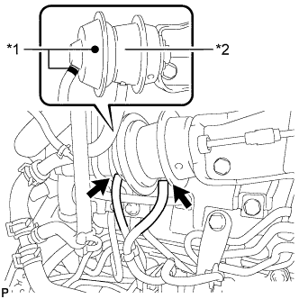 |
Подсоедините 2 вакуумных шланга № 2, показанных на рисунке.
| *1 | Желтая метка |
| *2 | Клапан РОГ № 2 |
Подсоедините вакуумный шланг № 1.
Подсоедините 3 разъема электровакуумного клапана.
| 41. ПОДСОЕДИНИТЕ МАСЛЯНЫЙ БАЧОК ЛОПАСТНОГО НАСОСА В СБОРЕ |
 |
Временно закрепите масляный бачок лопастного насоса 3 болтами.
Затяните 3 болта масляного бачка лопастного насоса в порядке, показанном на рисунке.
| 42. УСТАНОВИТЕ ЭЛЕКТРОННЫЙ БЛОК ПРИВОДА ФОРСУНОК |
Закрепите электронный блок привода форсунок в сборе 2 болтами.
Подсоедините 4 разъема.
| 43. УСТАНОВИТЕ КОРПУС ДРОССЕЛЬНОЙ ЗАСЛОНКИ ДИЗЕЛЬНОГО ДВИГАТЕЛЯ В СБОРЕ |
Закрепите новую прокладку и корпус дроссельной заслонки дизельного двигателя 2 болтами и 2 гайками.
Подсоедините разъем двигателя дроссельной заслонки.
| 44. УСТАНОВИТЕ ВПУСКНОЙ ПАТРУБОК № 1 |
Подсоедините впускной патрубок № 1 с воздушным шлангом № 1 и вверните 2 болта.
Затяните 2 хомута воздушного шланга № 1.
Подсоедините 2 разъема к датчику температуры воздуха на впуске и датчику положения дроссельной заслонки.
Установите 2 зажима жгута проводов.
| 45. ПОДСОЕДИНИТЕ ВОЗДУШНЫЙ ШЛАНГ ПРОМЕЖУТОЧНОГО ОХЛАДИТЕЛЯ |
 |
Подсоедините воздушный шланг промежуточного охладителя и затяните хомут шланга.
| *a | Передняя сторона автомобиля |
| *b | Правая сторона |
| 46. ПОДСОЕДИНИТЕ ВАКУУМНУЮ ТРУБКУ № 4 В СБОРЕ |
Подсоедините вакуумную трубку № 4 с помощью болта.
| 47. УСТАНОВИТЕ УПЛОТНЕНИЕ ФАРТУКА ЛЕВОГО ПЕРЕДНЕГО КРЫЛА |
Установите уплотнение фартука левого переднего крыла и закрепите его 5 фиксаторами.
| 48. УСТАНОВИТЕ ЛЕВОЕ ПЕРЕДНЕЕ КОЛЕСО |
| 49. УСТАНОВИТЕ ВЕНТИЛЯЦИОННУЮ РЕШЕТКУ В ВЕРХНЕЙ ЧАСТИ КОЖУХА В СБОРЕ |
| 50. ПОДСОЕДИНИТЕ ПРОВОД К ОТРИЦАТЕЛЬНОМУ ВЫВОДУ АККУМУЛЯТОРНОЙ БАТАРЕИ |
| 51. ДОБАВЬТЕ ОХЛАЖДАЮЩУЮ ЖИДКОСТЬ ДВИГАТЕЛЯ |
Затяните пробку сливного крана радиатора вручную.
Затяните пробку сливного крана блока цилиндров.
Заполните радиатор охлаждающей жидкостью с увеличенным сроком замены "Super Long Life Coolant (SLLC)" от компании Тойота, залив ее в трубопровод B расширительного бачка.
| Параметр / Устройство | Заданные условия | |
| для моделей с автоматической трансмиссией | Для моделей с задним подогревателем | 14,9 литра (15,7 кварты США, 13,1 английской кварты) |
| Для моделей без заднего подогревателя | 13,1 литра (13,8 кварты США, 11,5 английской кварты) | |
| для моделей с механической трансмиссией | Для моделей с задним подогревателем | 15,0 литра (15,8 кварты США, 13,2 английской кварты) |
| Для моделей без заднего подогревателя | 13,2 литра (13,9 кварты США, 11,6 английской кварты) | |
Несколько раз сожмите рукой входной и выходной патрубки радиатора № 1 и № 2, а затем проверьте уровень охлаждающей жидкости.
Если уровень охлаждающей жидкости опускается ниже линии В, долейте охлаждающую жидкость SLLC Toyota до линии В.
Установите пробку расширительного бачка радиатора.
Установите вентиляционную пробку с помощью гаечного ключа.
Выпустите воздух из системы охлаждения.
Прогревайте двигатель, пока не откроется термостат. Когда термостат откроется, несколько минут прокачивайте охлаждающую жидкость.
Поддерживайте частоту вращения коленчатого вала двигателя на уровне 2500-3000 об/мин.
Несколько раз сожмите рукой входной и выходной патрубки радиатора, чтобы удалить воздух.
Остановите двигатель и подождите, пока охлаждающая жидкость остынет до температуры окружающего воздуха.
Когда охлаждающая жидкость остынет, убедитесь, что она находится на уровне отметки FULL.
Если уровень охлаждающей жидкости ниже отметки FULL, долейте SLLC от компании Тойота до этой отметки.
| 52. УДАЛИТЕ ВОЗДУХ ИЗ ТОПЛИВНОЙ СИСТЕМЫ |
 |
С помощью ручного насоса, установленного на крышке топливного фильтра, удалите воздух из топливной системы. Продолжайте прокачку, пока сопротивление насоса при работе не возрастет.
Проверьте, запускается ли двигатель.
Если двигатель запускается, перейдите к следующему шагу.
Если запуск двигателя невозможен, прокачайте систему снова с помощью ручного насоса до повышения сопротивления насоса (см. процедуры выше). Затем запустите двигатель.
Выключите зажигание.
Подсоедините портативный диагностический прибор к DLC3.
Включите зажигание (IG) и портативный диагностический прибор.
Сбросьте коды DTC (Нажмите здесь).
Запустите двигатель.*1
 |
Войдите в следующие меню: Powertrain / Engine and ECT / Active Test / Test the Fuel Leak.*2
| *a | Для справки (испытание в режиме Active Test) |
Выполните следующее испытание 5 раз с интервалами включения/выключения 10 с: Active Test / Test the Fuel Leak.*3
После 5-го испытания в режиме Active Test дайте двигателю поработать на холостом ходу в течение не менее 3 мин.

Войдите в следующие меню: Powertrain / Engine and ECT / DTC.
Считайте текущие коды DTC.
Сбросьте коды DTC (Нажмите здесь).
Повторите операции с *1 по *3.
Войдите в следующие меню: Powertrain / Engine and ECT / DTC.
Считайте текущие коды DTC.
| 53. ПРОВЕРЬТЕ, НЕТ ЛИ УТЕЧЕК ОХЛАЖДАЮЩЕЙ ЖИДКОСТИ |
Заполните радиатор охлаждающей жидкостью и подсоедините приспособление для опрессовки системы охлаждения и проверки пробки радиатора.
Прогрейте двигатель.
С помощью приспособления для опрессовки системы охлаждения и проверки пробки радиатора увеличьте давление в радиаторе до 123 кПа (1,3 кгс/см2, 18 фунтов на кв. дюйм) и убедитесь, что давление не падает.
Если давление снижается, проверьте на наличие утечек шланги, радиатор и насос системы охлаждения. При отсутствии внешних утечек проверьте сердцевину нагревателя, блок цилиндров и головку.
| 54. ПРОВЕРЬТЕ, НЕТ ЛИ УТЕЧЕК МАСЛА |
Запустите двигатель. Убедитесь, что в узлах, в которых выполнялись работы, нет утечек масла.
| 55. ПРОВЕРЬТЕ, НЕТ ЛИ УТЕЧЕК ТОПЛИВА |
Выполните диагностику в режиме Active Test.
Подсоедините портативный диагностический прибор к DLC3.
Включите зажигание (IG).
Включите портативный диагностический прибор.
Войдите в следующие меню: Powertrain / Engine and ECT / Active Test.
Выполните диагностику в режиме Active Test.
| Дисплей портативного диагностического прибора | Испытываемое устройство | Диапазон регулирования | Замечание по диагностике |
| Test the Fuel Leak | Создание давления в топливной системе Common Rail для проверки наличия утечек топлива | Stop/Start (остановить/запустить) |
|
| 56. ПРОВЕРЬТЕ УРОВЕНЬ МОТОРНОГО МАСЛА |
Прогрейте двигатель, затем остановите его и подождите 5 минут. Уровень моторного масла должен находиться между отметками низкого и максимального уровней на щупе проверки уровня масла.
Если уровень низкий, проверьте, нет ли утечек, и долейте масло до максимальной отметки.
| 57. УСТАНОВИТЕ ЗАЩИТУ КАРТЕРА ДВИГАТЕЛЯ № 1 В СБОРЕ |
Установите защиту картера двигателя № 1 и закрепите ее 4 болтами.
| 58. УСТАНОВИТЕ НИЖНЮЮ ОБЛИЦОВКУ ПЕРЕДНЕГО БАМПЕРА |
Установите нижнюю накладку переднего бампера и закрепите ее фиксатором и 5 болтами.
| 59. УСТАНОВИТЕ ВЕРХНЕЕ УПЛОТНЕНИЕ КРОНШТЕЙНА РАДИАТОРА |
Установите верхнее уплотнение кронштейна радиатора и закрепите его 13 фиксаторами.
| 60. УСТАНОВИТЕ КРЫШКУ ДВИГАТЕЛЯ № 1 В СБОРЕ |
 |
Присоедините 2 крепления крышки двигателя № 1 к кронштейну крышки двигателя № 3.
| *1 | Крепление крышки двигателя № 1 |
| *2 | Кронштейн крышки двигателя № 3 |
Заверните 2 гайки.